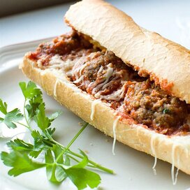

Meatball Sub

Description
By BIGGUY728 from
AllRecipes.com,
this meatball sub is an absolutely delicious take
on a classic sandwich.
This simple but flavorful recipe serves 4 hungry people
and is sure to fill everyone up!
Ingredients
- 1 pound ground beef
- 3/4 cup bread crumbs
- 2 teaspoons dried Italian seasoning
- 2 cloves garlic, minced
- 2 tablespoons chopped fresh parsley
- 2 tablespoons grated Parmesan cheese
- 1 egg, beaten
- 1 French baguette
- 1 tablespoon extra-virgin olive oil
- 1/2 teaspoon garlic powder
- 1 pinch salt, or to taste
- 1 (14 ounce) jar spaghetti sauce
- 4 slices provolone cheese
Directions
- Preheat the oven to 350 degrees F (175 degrees C).
- In a medium bowl, gently mix by hand the ground beef, bread crumbs, Italian seasoning, garlic, parsley, Parmesan cheese, and egg.
Shape into 12 meatballs, and place in a baking dish.
- Bake for 15 to 20 minutes in the preheated oven, or until cooked through. Meanwhile, cut the baguette in half lengthwise, and remove
some of the bread from the inside to make a well for the meatballs. Brush with olive oil, and season with garlic powder and salt.
Slip the baguette into the oven during the last 5 minutes of the meatball's time, or until lightly toasted.
- While the bread toasts, warm the spaghetti sauce in a saucepan over medium heat. When the meatballs are done, use a slotted spoon to transfer them to the sauce.
Spoon onto the baguette and top with slices of provolone cheese. Return to the oven for 2 to 3 minutes to melt the cheese. Cool slightly, cut into servings, and enjoy!